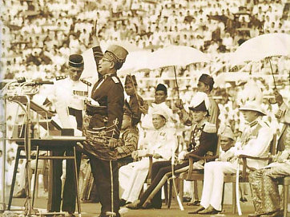
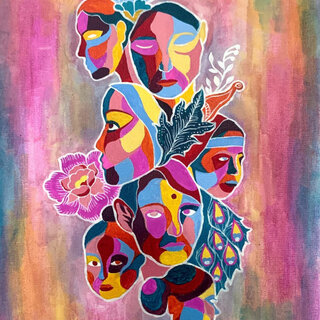

When we think about globalization, we usually jump straight into topics like trade, technology, or social media. However, before we can understand how globalization has shaped Malaysia, we first need to understand what culture actually is. This chapter helped me realize that culture is much more than food, clothing, or festivals. It is something that people constantly learn, experience, and reshape over time.
In the first chapter of Globalization and Culture: Global Mélange, Jan Nederveen Pieterse explains that culture cannot be reduced to a simple definition. Throughout history, different scholars have described culture in different ways. Some viewed it as traditions and customs that are passed down through generations, while others focused on identity, shared values, or even power. Instead of seeing one definition as correct, the author argues that culture is constantly evolving because society itself is always changing.
One of the biggest ideas I took away from this chapter is that culture is learned, not inherited. We are not born knowing how to celebrate holidays, speak a language, or interact with others. These behaviors are learned through our families, communities, schools, and everyday experiences. At the same time, culture is never completely fixed. As people travel, migrate, trade, and communicate across borders, new ideas become part of everyday life and slowly reshape existing traditions.
Malaysia as a Living Example
I wanted to focus purely on Malaysia because it perfectly reflects the author's definition of culture. Malaysia has never been a country with one single culture. Instead, it has always been a meeting place for different civilizations through trade and migration. Malay, Chinese, Indian, Indigenous, and many other communities have contributed to what Malaysia looks like today. Rather than existing separately, these cultures continue to influence one another in everyday life. Even myself, as a Malaysian Chinese, but with Filipino blood, its safe to say diversity runs through my veins.

Today, globalization has only expanded those interactions. It is completely normal to see Malaysians eating nasi lemak for breakfast, watching Korean dramas at night, ordering food through Grab, celebrating multiple cultural festivals, and listening to music from around the world. These experiences are not replacing Malaysian culture. Instead, they are becoming part of what modern Malaysian culture looks like.

"Culture is the profound exercise of identity." Pieterse, Globalization and Culture: Global Mélange, Chapter 1.
I like this quote because it reminds us that culture is not something we simply inherit and leave untouched. It is something we actively practice every day through the choices we make, the languages we speak, the traditions we continue, and even the new ideas we decide to adopt. In Malaysia, this is easy to see because people often balance traditional customs with global influences without feeling like they have to choose one over the other.
Why This Matters
I think this chapter provides the perfect foundation for understanding globalization because it reminds us that culture has never been completely isolated. Malaysia is often described as a multicultural country, but after reading this chapter I see it as something even more dynamic. Malaysian culture has always been developing through interactions with different people and different parts of the world. Globalization did not suddenly create cultural exchange. It simply accelerated a process that has been happening for centuries, from trading, to ships to social media.
What we know
- Culture is learned and constantly changing.
- Globalization builds on cultural exchange that has existed for centuries.
- Malaysia is a strong example of how local traditions and global influences can exist together.
Notes
- Jan Nederveen Pieterse, Globalization and Culture: Global Mélange (Lanham: Rowman & Littlefield, 2020), Chapter 1.